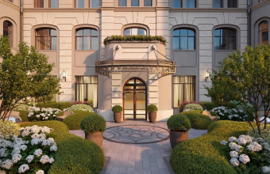

Девелопер реставрирует кирпичную кладку наружных стен здания, построенного в 1915 году по проекту архитектора Отто фон Дессина. Завершить фасадные работы планируется в декабре этого года. Клубный дом «Чистые Пруды» расположен в глубине тихого Потаповского переулка, в 50 метрах от знаменитого одноимённого пруда. Sminex проводит бережную реконструкцию здания, чтобы сохранить его изысканную ...